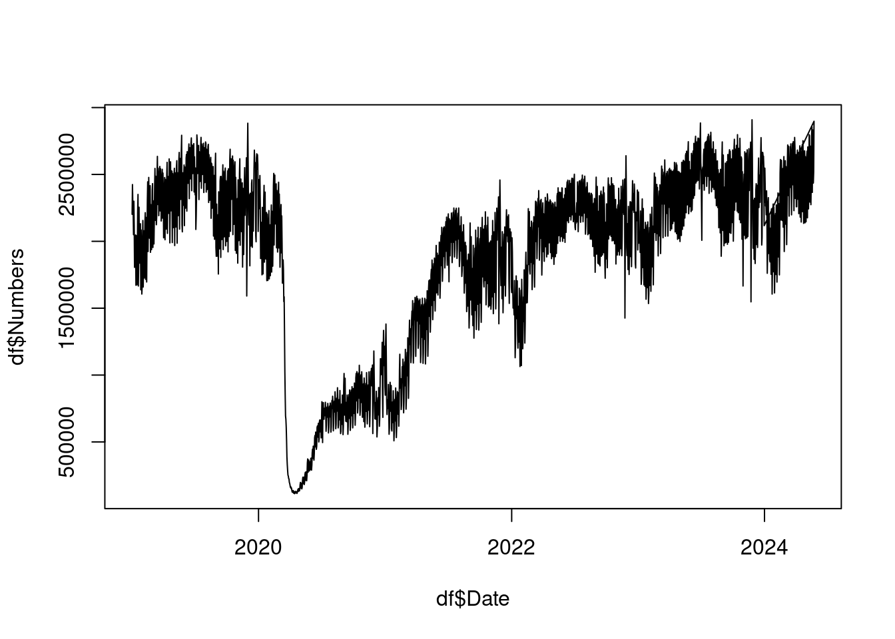

#library(rvest) # for scraping
#library(dplyr) # for data transformation
#library(lubridate) # for works with dates and times
if (!require("rvest")) install.packages("rvest")
if (!require("dplyr")) install.packages("dplyr")
if (!require("lubridate")) install.packages("lubridate")202404-tsa-passenger-volume
Goal
Read TSA Air Passenger Volume data provided by the U.S. Government.
Conventions
This document is a quarto visual representation of the R code.
Original comments from Alec are in quotes as well as variable names. All the original code is kept untouched and can be read in this document, some output is not shown when is not useful.
Development
Libraries used were rvest, dplyr and lubridate due to the extensive presence of dates in the read data.
Data was scraped from the website https://www.tsa.gov/travel/passenger-volumes in two sets, from 2019 until 2023 in variable “joined_urls” because the table in the source website is different for the present year data and then in “this_years_data”.
baseurl = "https://www.tsa.gov/travel/passenger-volumes"
years = seq(2019, 2023)
joined_urls = paste(baseurl, years, sep = '/')Links can be checked by checking the variable.
joined_urls[1] "https://www.tsa.gov/travel/passenger-volumes/2019"
[2] "https://www.tsa.gov/travel/passenger-volumes/2020"
[3] "https://www.tsa.gov/travel/passenger-volumes/2021"
[4] "https://www.tsa.gov/travel/passenger-volumes/2022"
[5] "https://www.tsa.gov/travel/passenger-volumes/2023"Data is pulled from the website into variable “html_docs” with lapply for rvest’s read_html.
# Pull in the HTML
html_docs = lapply(joined_urls, \(x) {
rvest::read_html(x)
})Checking “html_docs”.
html_docs[[1]]
{html_document}
<html lang="en" dir="ltr" prefix="content: http://purl.org/rss/1.0/modules/content/ dc: http://purl.org/dc/terms/ foaf: http://xmlns.com/foaf/0.1/ og: http://ogp.me/ns# rdfs: http://www.w3.org/2000/01/rdf-schema# schema: http://schema.org/ sioc: http://rdfs.org/sioc/ns# sioct: http://rdfs.org/sioc/types# skos: http://www.w3.org/2004/02/skos/core# xsd: http://www.w3.org/2001/XMLSchema# ">
[1] <head>\n<meta http-equiv="Content-Type" content="text/html; charset=UTF-8 ...
[2] <body>\n <div id="skip-link">\n <a href="#main-content" class="el ...
[[2]]
{html_document}
<html lang="en" dir="ltr" prefix="content: http://purl.org/rss/1.0/modules/content/ dc: http://purl.org/dc/terms/ foaf: http://xmlns.com/foaf/0.1/ og: http://ogp.me/ns# rdfs: http://www.w3.org/2000/01/rdf-schema# schema: http://schema.org/ sioc: http://rdfs.org/sioc/ns# sioct: http://rdfs.org/sioc/types# skos: http://www.w3.org/2004/02/skos/core# xsd: http://www.w3.org/2001/XMLSchema# ">
[1] <head>\n<meta http-equiv="Content-Type" content="text/html; charset=UTF-8 ...
[2] <body>\n <div id="skip-link">\n <a href="#main-content" class="el ...
[[3]]
{html_document}
<html lang="en" dir="ltr" prefix="content: http://purl.org/rss/1.0/modules/content/ dc: http://purl.org/dc/terms/ foaf: http://xmlns.com/foaf/0.1/ og: http://ogp.me/ns# rdfs: http://www.w3.org/2000/01/rdf-schema# schema: http://schema.org/ sioc: http://rdfs.org/sioc/ns# sioct: http://rdfs.org/sioc/types# skos: http://www.w3.org/2004/02/skos/core# xsd: http://www.w3.org/2001/XMLSchema# ">
[1] <head>\n<meta http-equiv="Content-Type" content="text/html; charset=UTF-8 ...
[2] <body>\n <div id="skip-link">\n <a href="#main-content" class="el ...
[[4]]
{html_document}
<html lang="en" dir="ltr" prefix="content: http://purl.org/rss/1.0/modules/content/ dc: http://purl.org/dc/terms/ foaf: http://xmlns.com/foaf/0.1/ og: http://ogp.me/ns# rdfs: http://www.w3.org/2000/01/rdf-schema# schema: http://schema.org/ sioc: http://rdfs.org/sioc/ns# sioct: http://rdfs.org/sioc/types# skos: http://www.w3.org/2004/02/skos/core# xsd: http://www.w3.org/2001/XMLSchema# ">
[1] <head>\n<meta http-equiv="Content-Type" content="text/html; charset=UTF-8 ...
[2] <body>\n <div id="skip-link">\n <a href="#main-content" class="el ...
[[5]]
{html_document}
<html lang="en" dir="ltr" prefix="content: http://purl.org/rss/1.0/modules/content/ dc: http://purl.org/dc/terms/ foaf: http://xmlns.com/foaf/0.1/ og: http://ogp.me/ns# rdfs: http://www.w3.org/2000/01/rdf-schema# schema: http://schema.org/ sioc: http://rdfs.org/sioc/ns# sioct: http://rdfs.org/sioc/types# skos: http://www.w3.org/2004/02/skos/core# xsd: http://www.w3.org/2001/XMLSchema# ">
[1] <head>\n<meta http-equiv="Content-Type" content="text/html; charset=UTF-8 ...
[2] <body>\n <div id="skip-link">\n <a href="#main-content" class="el ...“Pull out the table from the HTML (only one table per page), and pluck to turn it into a list of tables, not a list of lists (html_table returns a list). Then fix the data fields to proper data types from character.”
# Pull out the table from the HTML (only one table per page), and `pluck` to
# turn it into a list of tables, not a list of lists (html_table returns a list)
# Then fix the data fields to proper data types from character.
data_tables = lapply(html_docs, \(x) {
x |> rvest::html_table() |> purrr::pluck(1) |>
mutate(
Date = as.Date(Date, format = '%m/%d/%Y'),
Numbers = gsub(pattern = "[^0-9\\.]", replacement = "", x = Numbers) |> as.numeric()
)
})Date formats were changed from a character representation to a standard Date format.
As the source website has a different table for present year data, showing two columns in comparison with the previous year… “This year’s data – this is slightly different so we’ll treat it slightly differently.”
# This year's data -- this is slightly different so we'll treat it slightly differently.
this_years_data = rvest::read_html(baseurl) |> rvest::html_table() |> purrr::pluck(1)
# Pull out the first two columns -- this _ought_ to be just the Date field and the Current Year field.
this_years_data = this_years_data[, c(1,2)]
# Current Year field needs to be named "Numbers" to coincide with the archive data fields.
colnames(this_years_data)[2] = 'Numbers'
# Convert the data fields to proper data types
this_years_data = this_years_data |>
mutate(
Date = as.Date(Date, format = '%m/%d/%Y'),
Numbers = gsub(pattern = "[^0-9\\.]", replacement = "", x = Numbers) |> as.numeric()
)The two dfs can be checked:
head(data_tables)[[1]]
# A tibble: 365 × 2
Date Numbers
<date> <dbl>
1 2019-01-01 2201765
2 2019-01-02 2424225
3 2019-01-03 2279384
4 2019-01-04 2230078
5 2019-01-05 2049460
6 2019-01-06 2299648
7 2019-01-07 2119879
8 2019-01-08 1805496
9 2019-01-09 1811152
10 2019-01-10 2029644
# ℹ 355 more rows
[[2]]
# A tibble: 366 × 2
Date Numbers
<date> <dbl>
1 2020-01-01 2196916
2 2020-01-02 2461726
3 2020-01-03 2381987
4 2020-01-04 2244162
5 2020-01-05 2491894
6 2020-01-06 2280882
7 2020-01-07 1871059
8 2020-01-08 1880834
9 2020-01-09 2102860
10 2020-01-10 2142463
# ℹ 356 more rows
[[3]]
# A tibble: 365 × 2
Date Numbers
<date> <dbl>
1 2021-01-01 849514
2 2021-01-02 1246953
3 2021-01-03 1381448
4 2021-01-04 1130546
5 2021-01-05 807837
6 2021-01-06 705249
7 2021-01-07 814928
8 2021-01-08 816271
9 2021-01-09 750419
10 2021-01-10 929661
# ℹ 355 more rows
[[4]]
# A tibble: 365 × 2
Date Numbers
<date> <dbl>
1 2022-01-01 1616850
2 2022-01-02 2026176
3 2022-01-03 1921966
4 2022-01-04 1673499
5 2022-01-05 1501170
6 2022-01-06 1543985
7 2022-01-07 1518098
8 2022-01-08 1450135
9 2022-01-09 1706857
10 2022-01-10 1453110
# ℹ 355 more rows
[[5]]
# A tibble: 365 × 2
Date Numbers
<date> <dbl>
1 2023-01-01 2046950
2 2023-01-02 2368194
3 2023-01-03 2212528
4 2023-01-04 1985965
5 2023-01-05 2031976
6 2023-01-06 2043547
7 2023-01-07 1917290
8 2023-01-08 2226917
9 2023-01-09 2009868
10 2023-01-10 1678250
# ℹ 355 more rowshead(this_years_data)# A tibble: 6 × 2
Date Numbers
<date> <dbl>
1 2024-05-30 2652394
2 2024-05-29 2446990
3 2024-05-28 2555317
4 2024-05-27 2771151
5 2024-05-26 2412782
6 2024-05-25 2429025Joining into one single data.
# Put it all together -- bind together the list of data frames that is
# data_tables, and then bind to that this year's data.
df = bind_rows(data_tables)
df = bind_rows(df, this_years_data)And checking again the whole data into one df.
head(df)# A tibble: 6 × 2
Date Numbers
<date> <dbl>
1 2019-01-01 2201765
2 2019-01-02 2424225
3 2019-01-03 2279384
4 2019-01-04 2230078
5 2019-01-05 2049460
6 2019-01-06 2299648It can be all written as one single function.
# As a single function
clean_tsa_data = function(years) {
baseurl = "https://www.tsa.gov/travel/passenger-volumes"
joined_urls = paste(baseurl, years, sep = '/')
# Pull in the HTML
html_docs = lapply(joined_urls, \(x) {
rvest::read_html(x)
})
fix_data_types = function(df) {
df |> mutate(
Date = as.Date(Date, format = '%m/%d/%Y'),
Numbers = gsub(pattern = "[^0-9\\.]", replacement = "", x = Numbers) |> as.numeric()
)
}
# Pull out the table from the HTML (only one table per page), and `pluck` to
# turn it into a list of tables, not a list of lists (html_table returns a list)
# Then fix the data fields to proper data types from character.
data_tables = lapply(html_docs, \(x) {
x |> rvest::html_table() |> purrr::pluck(1) |> fix_data_types()
})
# This year's data -- this is slightly different so we'll treat it slightly differently.
this_years_data = rvest::read_html(baseurl) |> rvest::html_table() |> purrr::pluck(1)
# Pull out the first two columns -- this _ought_ to be just the Date field and the Current Year field.
this_years_data = this_years_data[, c(1,2)]
# Current Year field needs to be named "Numbers" to coincide with the archive data fields.
colnames(this_years_data)[2] = 'Numbers'
# Convert the data fields to proper data types
this_years_data = this_years_data |> fix_data_types()
# Put it all together -- bind together the list of data frames that is
# data_tables, and then bind to that this year's data.
df = bind_rows(data_tables)
df = bind_rows(df, this_years_data)
df
}At this point the Exploratory Data Analysis could begin, although the goal of the exercise was only to collect and tidy the data, there was more time available that was used for some further analysis.
# Visualize
plot(df$Date, df$Numbers, type = 'l')
Tis: Time Indexed Series package and mgcv: Mixed GAM Computation Vehicle with Automatic Smoothness Estimation loaded.
#library(tis)
if (!require("tis")) install.packages("tis")
if (!require("mgcv")) install.packages("mgcv")Final conclusions:
Tuesdays are the least busy day to fly, followed by Saturday, and Wednesday.
Fridays are the busiest day to fly, followed by Sunday, and Thursday
Weekday (+/-5 days) surrounding holiday increases passenger volume by 0.13 standard deviations
Least-traveled holidays are Thanksgiving, Independence Day, Christmas, in that order.”
# Model
holidays = tis::holidays(years)
holiday_names = names(holidays)
holidays = as.Date(as.character(holidays), format = '%Y%m%d')
names(holidays) = holiday_names
df = df |>
mutate(
Year = as.factor(lubridate::year(Date)),
Wday = factor(lubridate::wday(Date, label = TRUE), levels = c("Sun", "Mon", "Tue", "Wed", "Thu", "Fri", "Sat"), ordered = FALSE),
DayOfMonth = as.factor(lubridate::day(Date)),
DayOfYear = lubridate::yday(Date),
WeekOfYear = as.factor(lubridate::week(Date)),
IsHoliday = Date %in% holidays,
WhichHoliday = names(holidays)[match(Date, holidays)],
WhichHoliday = relevel(as.factor(case_when(is.na(WhichHoliday) ~ "ordinary", .default = WhichHoliday)), 'ordinary')
)
df$ClosestHoliday = as.Date(sapply(df$Date, \(x) holidays[which.min(abs(x - holidays))]), origin = '1970-01-01')
days_around_holiday = 5
df = df |> mutate(SurroundsHoliday = abs(Date - ClosestHoliday) < days_around_holiday & abs(Date - ClosestHoliday) != 0)
df = df |> arrange(Date)
# Model could be improved by adding in a COVID covariate explicitly instead of just modeling overall trend in Date.
mod = mgcv::gam(Numbers ~ s(as.numeric(Date)) + s(DayOfYear) + Wday + WhichHoliday + SurroundsHoliday, data = df)
mod_scaled = mgcv::gam(scale(Numbers) ~ s(as.numeric(Date)) + s(DayOfYear) + Wday + WhichHoliday + SurroundsHoliday, data = df)
summary(mod_scaled)
Family: gaussian
Link function: identity
Formula:
scale(Numbers) ~ s(as.numeric(Date)) + s(DayOfYear) + Wday +
WhichHoliday + SurroundsHoliday
Parametric coefficients:
Estimate Std. Error t value Pr(>|t|)
(Intercept) 0.191708 0.023784 8.060 1.31e-15 ***
WdayMon -0.106400 0.033974 -3.132 0.00176 **
WdayTue -0.523600 0.032927 -15.902 < 2e-16 ***
WdayWed -0.400152 0.032939 -12.148 < 2e-16 ***
WdayThu -0.049103 0.033116 -1.483 0.13830
WdayFri 0.009048 0.033017 0.274 0.78408
WdaySat -0.450567 0.032937 -13.680 < 2e-16 ***
WhichHolidayChristmas -0.384899 0.200964 -1.915 0.05561 .
WhichHolidayColumbus 0.296837 0.178730 1.661 0.09691 .
WhichHolidayGWBirthday 0.495462 0.178342 2.778 0.00552 **
WhichHolidayIndependence -0.445721 0.197829 -2.253 0.02437 *
WhichHolidayJuneteenth 0.283993 0.279188 1.017 0.30918
WhichHolidayLabor 0.222636 0.178618 1.246 0.21275
WhichHolidayMemorial 0.073708 0.178413 0.413 0.67955
WhichHolidayMLKing 0.325587 0.178455 1.824 0.06823 .
WhichHolidayNewYears 0.555746 0.202509 2.744 0.00612 **
WhichHolidayThanksgiving -1.051611 0.179066 -5.873 5.03e-09 ***
WhichHolidayVeterans 0.112775 0.197897 0.570 0.56883
SurroundsHolidayTRUE 0.131260 0.024292 5.403 7.35e-08 ***
---
Signif. codes: 0 '***' 0.001 '**' 0.01 '*' 0.05 '.' 0.1 ' ' 1
Approximate significance of smooth terms:
edf Ref.df F p-value
s(as.numeric(Date)) 8.965 9.000 1124.56 <2e-16 ***
s(DayOfYear) 8.695 8.973 28.09 <2e-16 ***
---
Signif. codes: 0 '***' 0.001 '**' 0.01 '*' 0.05 '.' 0.1 ' ' 1
R-sq.(adj) = 0.847 Deviance explained = 85%
GCV = 0.15583 Scale est. = 0.15294 n = 1977# Tuesdays are the least busy day to fly, followed by Saturday, and Wednesday.
# Fridays are the busiest day to fly, followed by Sunday, and Thursday
# Weekday (+/-5 days) surrounding holiday increases passenger volume by 0.13 standard deviations
# Least-traveled holidays are Thanksgiving, Independence Day, Christmas, in that order.# Visual inspection of model fit
f = fitted(mod)
plot(df$Date, df$Numbers, type = 'l')
lines(df$Date, f, col = 'red')